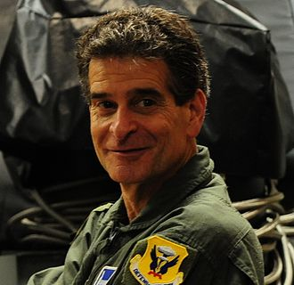

Dean Kamen

Kamen is known best for inventing the product that eventually became known as the Segway PT, an electric, self-balancing human transporter with a computer-controlled gyroscopic stabilization and control system. The device is balanced on two parallel wheels and is controlled by moving body weight. The machine's development was the object of much speculation and hype after segments of a book quoting Steve Jobs and other notable information technology visionaries espousing its society-revolutionizing potential were leaked in December 2001.
Kamen was already a successful inventor: his company Auto Syringe manufactures and markets the first drug infusion pump. His company DEKA also holds patents for the technology used in portable dialysis machines, an insulin pump (based on the drug infusion pump technology) and an all-terrain electric wheelchair known as the iBOT, using many of the same gyroscopic balancing technologies that later made their way into the Segway.
Kamen has worked extensively on a project involving Stirling engine designs, attempting to create two machines: one that would generate power, and the Slingshot that would serve as a water purification system. He hopes the project will help improve living standards in developing countries. Kamen has a patent on his water purifier, and other patents pending. In 2014, the film SlingShot was released, detailing Kamen's quest to use his vapor compression distiller to fix the world's water crisis.
Kamen is also the co-inventor of a compressed air device that would launch a human into the air in order to quickly launch SWAT teams or other emergency workers to the roofs of tall, inaccessible buildings. In 2009 Kamen stated that his company DEKA was now working on solar powered inventions. Kamen and DEKA also developed the DEKA Arm System or "Luke", a prosthetic arm replacement that offers its user much more fine motor control than traditional prosthetic limbs. It was approved for use by the US Food and Drug Administration (FDA) in May 2014, and DEKA is looking for partners to mass-produce the prosthesis.